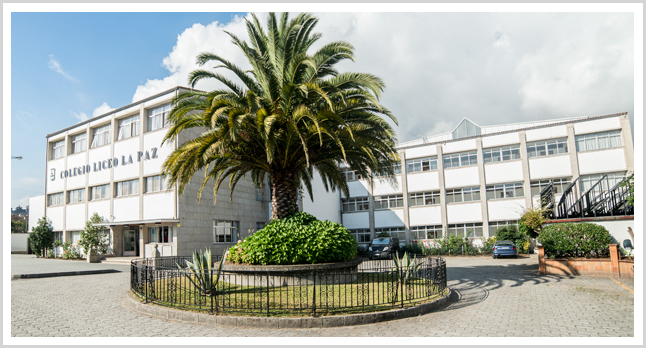

Historia
Un poco de nosotros
Los modelos de La casa del Buho son utilizados por desarrolladores de juegos, agencias de noticias, arquitectos,
estudios de efectos visuales, anunciantes y profesionales creativos de todo el mundo. Ya sea quesea un artista 3D o
no, probablemente haya visto modelos casa del Buho cientos de veces y no lo sabía, ¡lo cual está bien para nosotros!
Nuestro objetivo es ahorrarles a los clientes el tiempo de hacer un excelente modelo 3D y, en cambio, permitirles
dedicar su tiempo a áreas de su proceso de producción. Nuestros clientes nos dicen que ahorran un promedio de 27
horas por modelo comprado, lo que puede un salvavidas en tiempos difíciles.
La misión secundaria de La casa del Buho es enfocar la creatividad de los artistas de todo el mundo para mejorar
continuamente nuestra de modelos, mientras ayuda a los artistas que suministran esos modelos a construir una
carrera como modeladores 3D profesionales.
La casa del Buho tiene su sede en Selfoss, Islandia. En 2022, La casa del Buho fue adquirida por Liceo La paz, una
compañia educativa Española que ofrece soluciones de educacion completa, profesorado de alta calidad y clases
de ultima generadion para una educación y mejorada.
